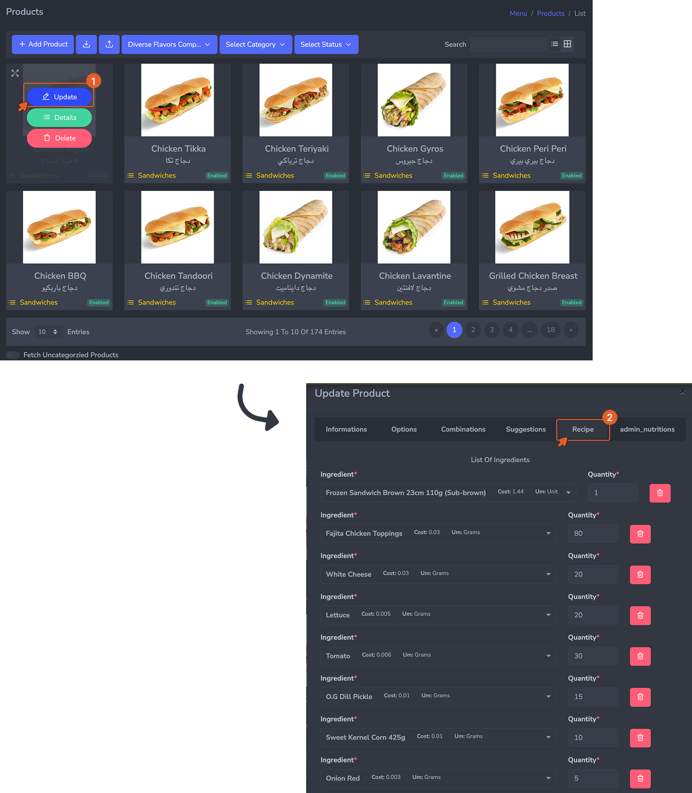
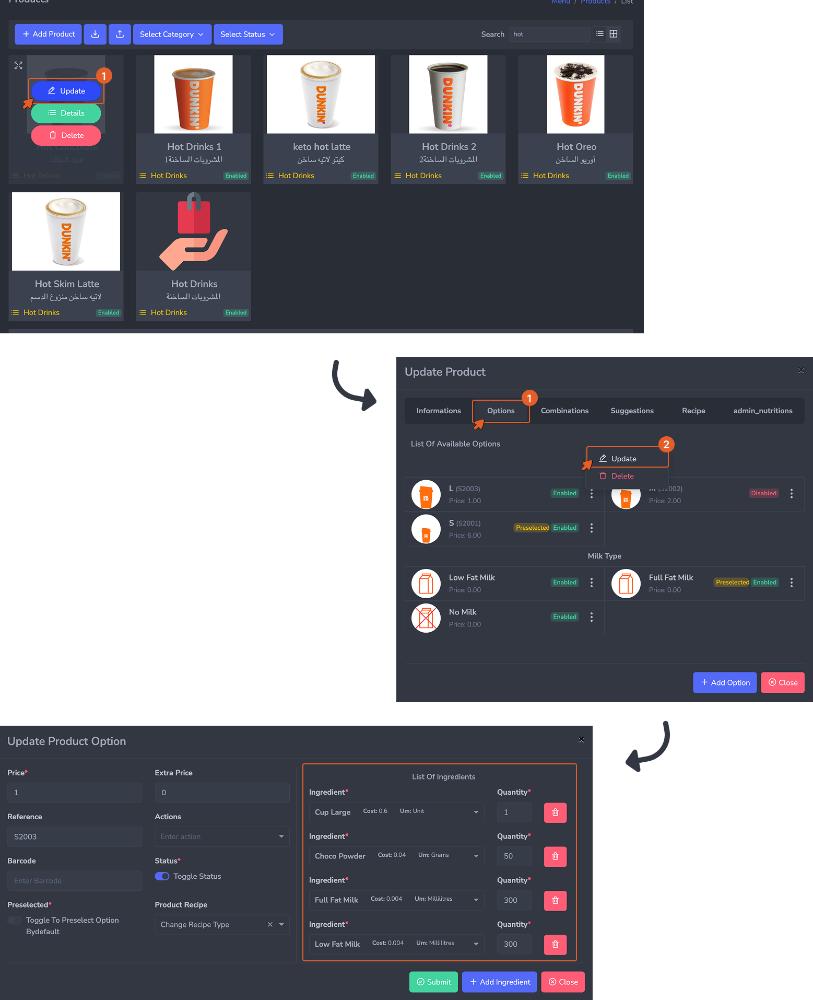

Overview
A supplier record is the system's reference for every vendor you buy from. Once registered, a supplier can be selected on purchase orders and receptions, giving you a full procurement trail across all your buying activity.
How to Create a Supplier
Navigate to Menu → Stock → Suppliers and click + Add Supplier.
- Name (Required): Enter the official or recognized company name.
- Optional Details: Contact Name, Phone (defaults to +966), Email, Address, and Location (map pin). It is highly recommended to fill these out now to save your purchasing team time when following up on orders later.
Managing Your Suppliers
Once saved, vendors appear in the Suppliers List, where you can search, view, edit, or delete records.
- Editing: Updates take effect immediately for future purchase orders but will not alter past historical records.
- Deleting: Not recommended if the supplier is tied to existing purchase orders, as it will create gaps in your reporting. If you stop working with a vendor, simply stop placing orders with them rather than deleting their record.
Best Practices for Setup
- Register everyone before moving on: You cannot create a purchase order without an attached supplier.
- One record per billing entity: If a single company sends you separate invoices for different divisions (e.g., dairy vs. dry goods), create two supplier records. If they send one combined invoice, one record is enough.
- Be consistent: Standardize how you name suppliers across branches (e.g., avoid using "Al Watania" in one place and "Watania Poultry" in another) to keep reporting accurate.
Overview
A recipe links a product to the ingredients it consumes. When a product is sold at the POS, the system reads its recipe and instantly deducts the exact ingredient quantities from stock at the relevant branch.
How to Access
Navigate to Menu → Products, click the eye icon or product name to open its details, and click the Recipe tab. (This tab is also available when adding a new product.)
Product-Level Recipe
This applies when a product is sold as-is, without variants or options. The recipe is attached directly to the product and represents the single, fixed set of ingredients consumed on every sale — regardless of any customer choice.
Example: A Chicken Fajita Sandwich always uses the same bread, toppings, vegetables, and condiments. The recipe is set once on the product itself.

A product-level recipe listing all ingredients and quantities consumed per serving for this product.
Option-Level Recipe
This applies when a product has options (e.g., size, milk type, preparation style) and each option consumes different ingredients or quantities. In this case, you define a separate recipe for each relevant option.
When a customer selects an option at the point of sale, the system deducts the ingredients tied to that specific option, not a generic product recipe.
Example: A Hot Chocolate is sold in sizes S, M, and L. Each size uses a different cup and different quantities of milk and cocoa powder. Each size option therefore has its own recipe.

The option-level recipe form, accessible by editing a specific product option. Ingredients defined here are consumed only when this particular option is selected.
When to use each: Use a product-level recipe when the product has no options, or when all options share the same ingredients and quantities. Use option-level recipes when different options consume different ingredients or amounts — such as different cup sizes, milk types, or preparation methods.
Building a Recipe — Field by Field
- Ingredient (Required): Select the raw material from the dropdown (must be previously created in Step 02). Add a separate line for each ingredient.
- Quantity per Serving (Required): Enter the exact amount used per serving. Do not estimate. Work with your kitchen team to measure actual portions, as inaccurate quantities are the biggest cause of stock discrepancies.
- Unit of Measure (Required): This must match the ingredient's base unit OR have a valid conversion defined (e.g., milliliters to liters).
Common mistakes to avoid: Entering "about 20g" instead of the actual measured amount permanently skews inventory. Also avoid unit errors — entering a quantity in kilograms when the base unit is grams. Always update the system recipe immediately if the kitchen changes a portion size.